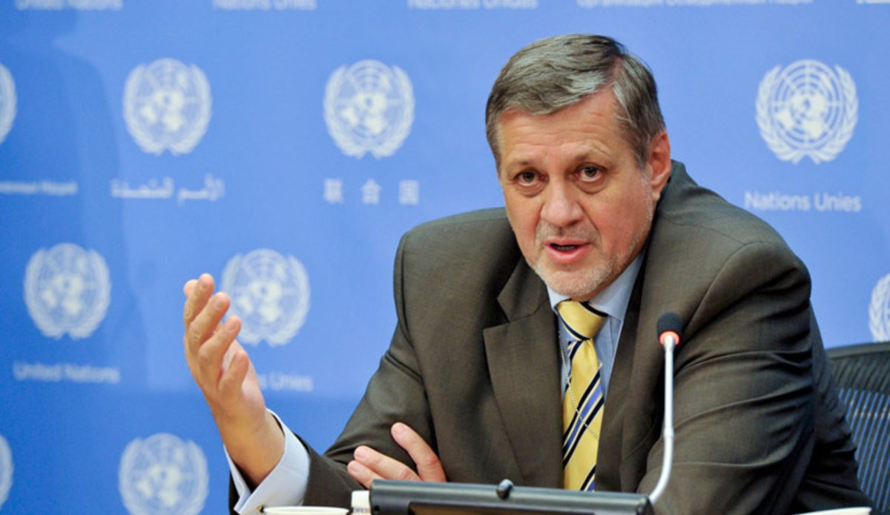
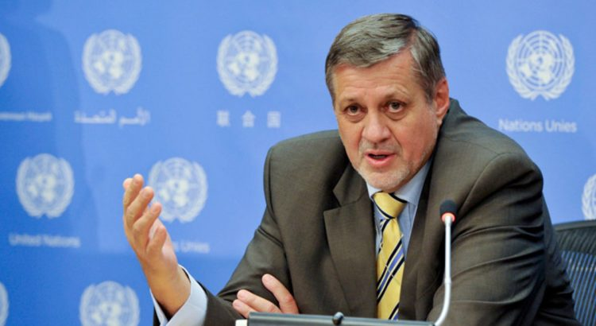

UN Calls on New Lebanese PM to Break Corruption

The United Nations Special Coordinator for Lebanon, Jan Kubis, announced that he had seen Prime Minister-designate Hassan Diab‘s seriousness in working on implementing reforms and fighting corruption.After a meeting yesterday, the United Nations stressed that Lebanon’s first step to take reforms, break past corruption practices, and adopt transparency and trust.
'The government needs to implement a meaningful reform package, to break with the corrupt practices of the past, to promote justice, transparency, and accountability,' Kubis said.'If the government’s actions are attuned to the thinking, the demands and the aspirations of the people, that would be helpful, also to mobilize international support.'
There is a government today which will make its statement that will reflect the demands and needs of the people, and without it, it will be difficult to obtain the confidence of the Lebanese who have questions, and we cannot close our eyes to this matter, Kubis told reporters after meeting Diab in Beirut.But after what I heard from the prime minister, he added, I have no doubts that he will work on this matter and on reforms.
Until the date of the promised confidence session comes, and at a time when Diab and his team seem to bet on winning the confidence of the protesters in the burning street first, some features of the parliamentary bloc’s orientations can be drawn regarding giving the government confidence.This is because the eye of the observers will monitor, first, the volume of participation in the session, while the quorum for its meeting is 65 deputies, at a time when preliminary estimates indicate that the government 'Saving Lebanon' will receive 67 votes in favor (confidence) compared to 57 opponents (no confidence).
The new government became a reality, legally and constitutionally, but still must win confidence first and take the country under control.This does not seem easily possible for a number of reasons.One of these is the great impasse in its path, represented by the expansion of space objection to it in the street.This flared up considerably from the moment its decrees were announced.There exists a broad front, starting from the 'Future' movement to the 'Lebanese Forces.'
As for the international trust in Lebanon, which is perhaps the most difficult for the government, the international eye, throughout Europe, reaching the United States of America and all international financial institutions, monitors the government.Any aid to Lebanon is linked with the direction that this government must take to implement a serious reform program.The basis of which is combating corruption in all departments and ministries.
That is, apart from its liberation from the imprint of Hezbollah, to satisfy the Lebanese and convince the world that it is a pure Lebanese government, its sovereign decisions stem from the interest of Lebanon and are in its interest alone.Meanwhile, Lebanese Minister of Information, Manal Abdel Samad, said, after the end of the first session of the committee drafting the ministerial statement yesterday, that the government was facing a test to gain internal and external confidence.
In the meantime, demonstrators who were organizing a protest in Beirut, yesterday, were attacked and threatened by members of the Amal movement.The Amal movement members attacked the protesters, who were organizing a protest in front of the South Council, a council that was established to develop the southern regions, and it is located in the 'wing' in Beirut.
[bsa_pro_ad_space id=4]
Share on Facebook Tweet Follow us
Posted On: 2020-01-25T00:00:00
Posted By: Benedict Kasigara




Content Date: 2020-01-25
Download Date: 2021-07-09
Document ID: L0C04EWZJ